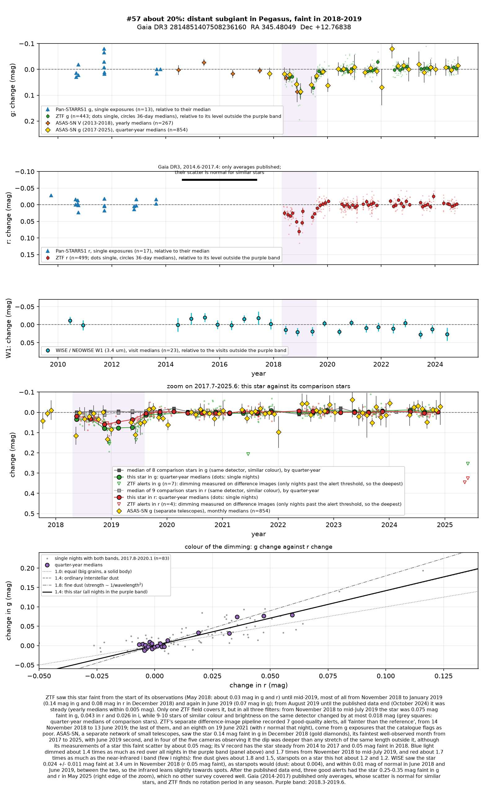
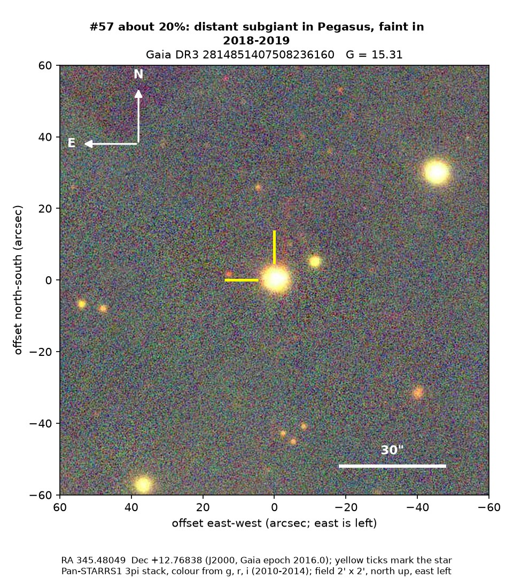
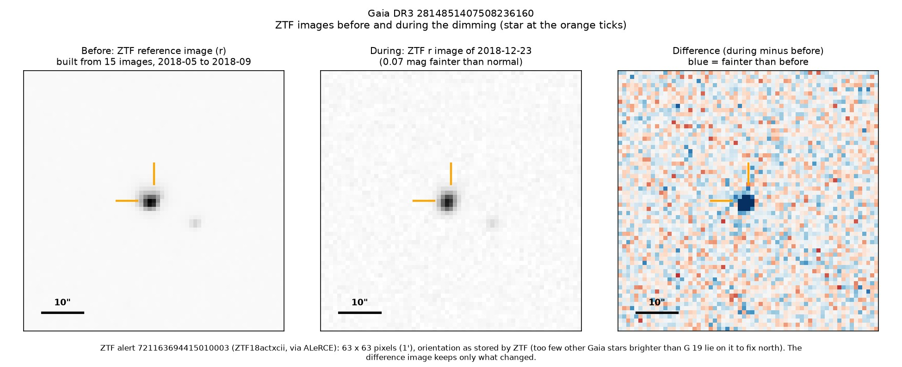

Professor of Mathematics
Paata Ivanisvili
Department of Mathematics, University of California, Irvine

Candidate 57: a distant old star that was faint for a year
Why this estimate. The dimming is real: ZTF recorded it in three filters and ASAS-SN, a separate network of small telescopes, saw the star faintest in December 2018 too. But the infrared measurement made during the dimming leans towards starspots, a machine classification calls the star a spotted binary, and only one ZTF field covers it.
How to read the pictures. The finder chart shows a patch of sky two arcminutes across, about a fifteenth of the Moon’s width, with north up and east to the left. The star sits between the two yellow ticks, and the white bar is 30 arcseconds long. On a light curve the vertical axis is magnitude, a brightness scale on which larger numbers mean fainter stars, and it is drawn so that down means fainter. Purple shading marks the dimming. Each survey uses slightly different filters, so each is compared with its own normal level. The ZTF pictures show ZTF’s reference image of the star, an image taken during the dimming, and the difference between the two, in which only what changed remains: blue means fainter and red brighter.

What changed. The star is a subgiant poor in heavy elements, 2,200 to 2,900 parsecs away in Pegasus, in the Milky Way’s thick disk or halo and near the direction of the MBM 53–55 dust clouds. ZTF found it already faint when it began observing in May 2018. It was faintest from November 2018 to January 2019, 0.19 magnitudes fainter in green light on 17 December 2018, about 16 per cent less light, faint again in June 2019, and steady from August 2019 to 2024. ASAS-SN saw it 0.14 magnitudes faint in December 2018.
Why it might matter. Blue light dimmed about 1.4 to 1.7 times as much as red light, which fits dust and is more than spots on a star this cool usually give. But WISE observed in November 2018 and saw the star 0.024 magnitudes faint at 3.4 microns, about what starspots would give and more than dust would (0.004), so the infrared leans towards spots. In May 2025 alerts showed the star faint again, but no other survey confirmed it.
No record of the dimming could be found. The star is not in SIMBAD, VSX (the variable-star index), Gaia’s variable-star lists or the other catalogues consulted, nor among the dimming stars of Tzanidakis et al. (2025), and there is no Transient Name Server entry, Gaia alert or paper giving its Gaia number. ZTF’s alert system holds only machine-generated classifications for it. One of them calls it a spotted binary of the RS Canum Venaticorum kind, with a probability of 0.90.
- Star
- Gaia DR3 2814851407508236160, a distant, metal-poor subgiant
- Location
- RA 345.48049°, Dec +12.76838° (J2000), in Pegasus
- Distance
- 2,200 to 2,900 parsecs (7,200 to 9,500 light-years)
- Brightness
- Gaia G = 15.3, far too faint for the eye
- Probability
- This candidate is unconfirmed. The percentage under the title is an estimate of the chance that it is a real, previously unrecorded case of the kind described. The estimate has not been checked by outside experts. See the introduction to all fifty-eight candidates.
- Caveat
- The infrared leans towards starspots. Only one ZTF field covers the star, its beginning was missed, and there is no TESS or ultraviolet test. Candidate 46, about 29 degrees away, was also deepest in December 2018. There is no spectrum.

